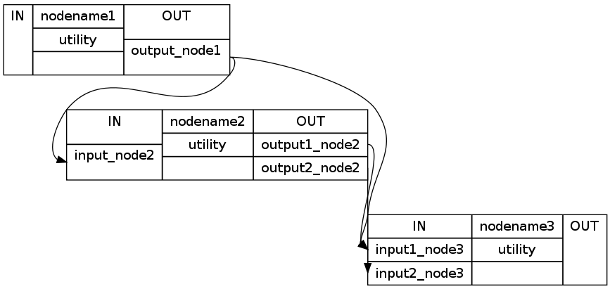
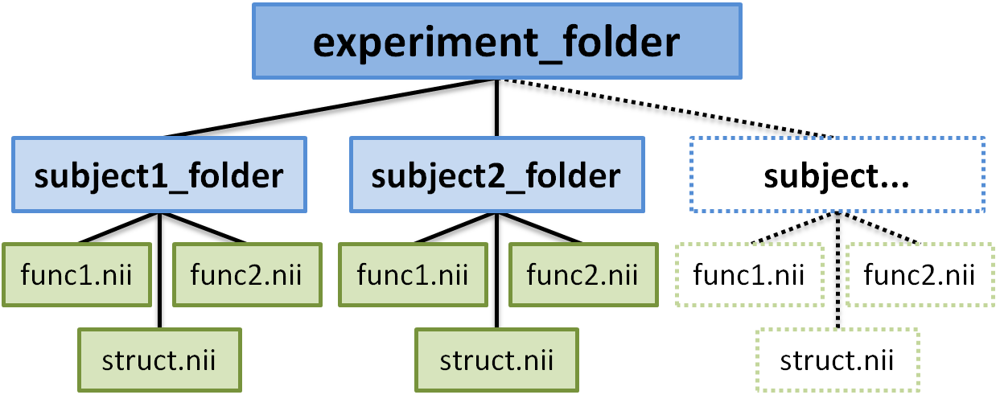

This section is meant as a step by step introduction to building your own pipeline. At the end you should know what the important characteristics of a pipeline is, how it is constructed, how its parts are connected, so that you are ready to implement your own pipeline.
A pipeline in the Nipype sense is a sequence of procedures to automate the analysis of fMRI-data. A pipeline or also called workflow is built by connecting specific nodes to each other. In the context of nipype, nodes contain specific functions or algorithms of interfaces such as SPM, FSL, FreeSurfer etc. All those nodes have defined inputs and outputs. Creating a workflow then is a matter of connecting appropriate outputs to inputs. The main advantage of the pipeline is that it can use different modules from different packages (e.g. SPM, FSL, FreeSurfer, Camino, AFNI, Slicer) and is able to exchange the data between them.
There are many ways to construct a pipeline but in the end it comes down to the following steps:
- Import appropriate modules
- Define nodes
- Define pipeline(s)
- Create connections
- Visualize pipeline
- Execute pipeline
The first thing you’ll have to do is to import the interfaces you want to use. That depends on the nodes and algorithms you want to use in your pipeline. You can either import an interface and give it a specific name or import only a desired algorithm of it.
# imports the engine interface as 'pe'
import nipype.pipeline.engine as pe
# imports only the function Bunch from the base interface
from nipype.interfaces.base import Bunch
Important
If you use the freesurfer interface, please make sure to tell freesurfer where the subjects directory is by using the following command:
import nipype.interfaces.freesurfer as fs
freesurfer_dir = '~SOMEPATH/freesurfer'
fs.FSCommand.set_default_subjects_dir(freesurfer_dir)
Before the parameters of a node can be specified they first have to be initiated. The initiation is quite simple and done as follows:
nodename = pe.Node(interface=interface.algorithm(), name='visibleName')
#Example of an initiation of a spm-realignment node
import nipype.interfaces.spm as spm
realign = pe.Node(interface=spm.Realign(), name='realign')
Note
The difference between a Node and a MapNode is explained here
Depending on the purpose of a node and its underlying algorithm, different parameters can be specified. They can be distinguished into:
But how can you find out what the possible inputs and outputs of a node are?
The specification of a node can be done in three ways.
#1. specify parameters in the during initiation
mybet = fsl.BET(in_file='foo.nii', out_file='bar.nii')
#2. specify parameters after initiation
mybet = fsl.BET()
mybet.inputs.in_file = 'foo.nii'
mybet.inputs.out_file = 'bar.nii'
#3. specify parameters when running a node
mybet = fsl.BET()
mybet.run(in_file='foo.nii', out_file='bar.nii')
If you want a node to be executed over different sets of data (e.g. different subjects, different conditions, different smoothing kernels,...) you have to use iterables.
nodename.iterables = ('input_to_iterate_over',[conditions_to_iterate_over])
E.g. If you want to execute a pipeline for subject1 and subject2 and you want to run the pipeline with a smoothing kernel of 4 and one of 8 you do the following:
startnode.iterables = ('subject_id', ['subject1','subject2'])
smoothnode.iterables = ('fwhm', [4, 8])
If you’ll use MapNodes you’ll also have to use an iterfield. This enables running the underlying interface over a set of inputs and is particularly useful when the interface can only operate on a single input. A good tutorial to iterables and iterfields can be found at MapNode, iterfield, and iterables explained
If you want to run an algorithm without being a node or being a part of a pipeline you only have to define the nodename, interface and algorithm.
smooth = spm.Smooth()
This is most of the time used if you want to test a node or if you want to use the nipype environment to run the different kind of algorithms without using them inside a pipeline. For example, it isn’t recommended to use the recon-all algorithm inside a pipeline or more extrem in parallel mode because of its computational and time costs. Nonetheless you can use Nipype to execute the recon-all process.
If you want to create an individual node by yourself that doesn’t use an algorithm of an interface already specified and you want to use the advantage of input and output fileds you can build your own node with the IdentityInterface method of the utility interface.
#import the utility interface
import nipype.interfaces.utility as util
#define the fields you want to use
individualnode = pe.Node(interface=util.IdentityInterface(fields=['field1','field2']),
name='individualnodename')
Now we have designed our own node with the in- and output field ‘field1’ and ‘field2’. If you now want the node to execute a specific kind of algorithm, you’ll have to add a function to the connections to the inputnode. How this can be done is described in 4. Create connections - Modifying inputs to nodes.
The initiation of a pipeline is quite the same as the one of a node. Except that you don’t need to declare an interface.
workflow = pe.Workflow(name='preproc')
If you’ve already created a pipeline with all its connections and want to reuse it in another part of the workflow you can simply clone it with the clone method.
For example, if you’ve already created an analysis pipeline for the workflow after a volume preprocess and want now to reuse this algorithm for the analysis of preprocessed sufacedata you can clone the volanalysis like this:
surfanalysis = volanalysis.clone(name='surfanalysis')
This cloneing has to be done, because if you would use the volanalysis again, the data of the volanalysis would be overwritten. Because of that and because of the ambiguity of the connections in the workflow, the pipeline would not run. To solve this problem, every node and pipeline has to have its unique name.
If you want to change some parameters of the pipeline after cloning you just have to specify the exact pipeline, node and parameter you want to change:
surfanalysis.inputs.level1design.timing_units = 'secs'
Which now would set the input field timing_units of the level1design node which is part of the surfanalysis pipeline to ‘secs’.
This is the essential part of creating a pipeline and leads to the main advantage of the pipeline which is to execute everything autonomous, in one workflow and if you want to in parallel.
There is a basic and an advanced way to create connections between two nodes. The basic way allows only to connect two nodes at a time whereas the advanced one can establish multiple connections at once.
#basic way to connect two nodes
workflowname.connect(nodename1, 'out_files_node1', nodename2, 'in_files_node2')
#advanced way to connect multiple nodes
workflowname.connect([(nodename1, nodename2, [('output_node1', 'input_node2')]),
(nodename1, nodename3, [('output_node1', 'input1_node3')]),
(nodename2, nodename3, [('output1_node2', 'input1_node3'),
('output2_node2', 'input2_node3')
])
])
The advanced connection example would as a detailed graph look like this:
It is important to point out that you don’t just have to connect the nodes, but rather to connect the output and input fields of each node.
If you have multiple pipelines, like one for preprocessing, one for modelestimation and one for volume analysis, you can’t just connect the nodes to each other. You have to connect the pipelines to each other instead.
Assumed that we have a node “realign” which is part of a pipeline called “preprocess” and that we have a node called “modelspec” which is part of a pipeline called “modelestimation”. If we now want to connect does to pipelines at those particular points we first have to create a kind of meta-pipeline which contains those to pipelines. This initiation and the following connections would look like that:
frameflow = pe.Workflow(name='frameflow')
frameflow.connect([(preprocess, modelestimation,[('realign.out_files', 'modelspec.in_files')
])
])
You see that the main difference to the connections between nodes is that you connect the pipelines, but have to specify which nodes with which output should be connected to which nodes with which input.
If you want to run a node by itself without connecting it to any other node, you can do that with the add_nodes method.
#adds node smooth and node realign to the pipeline
workflow.add_nodes([smoother, realign])
If you want to modify the output of a node before sending it to the next one you can do that by adding a function into the connection process.
First you have to define your function that modifies the data and returns the new output. If you have done this, than you can insert the function into the connection process.
#your function that does something
def myfunction(input_from_node):
#changes the data as you defined
output_for_node_2 = input_from_node * 2
#return the output
return output_for_node_2
#connection of two nodes with a function in between
workflowname.connect([(nodename1, nodename2,[(('out_file_node1', myfunction),
'in_file_node2')]),
])
This will take the output of ‘out_file_node1’ and give it as an argument to the function myfunction. The return value that will be returned by myfunction then will be forwarded as input to ‘in_file_node2’.
If you want to insert more than one parameter into the function do as follows:
def myfunction(input_from_node, additional_input):
output_for_node_2 = input_from_node + additional_input
return output_for_node_2
#connection of two nodes with a function in between which takes two arguments
workflowname.connect([(nodename1, nodename2,[(('out_file_node1', myfunction, additional_input),
'in_file_node2')]),
])
To visualize the flow of a pipeline you can use the method write_graph().
#Example of using write_graph
workflowname.write_graph(graph2use='flat')
This method will create two files:
If graphviz is installed the dot files will automatically be converted into png-files. Otherwise you can take the dot files and load them in a graphviz visualizer elsewhere.
You can also specify the deepness you want the graph to show by changing the argument graph2use:
After setting everything up, the pipeline can be executed with run(). You can run a pipeline either in serial or in parallel mode.
#To run the pipeline serial
workflow.run(plugin='Linear')
#To run the pipeline paralle using 2 processes
workflow.run(plugin='MultiProc', plugin_args={'n_procs' : 2})
Hint
A good tutorial how to set up the parallel mode can be found under Distributed processing with nipype.
After constructing the framework of the pipeline in the previous section, we’re almost ready to execute the pipeline. But first we have to define the data we want to run the pipeline on and the results we want to get out of it. To do that we have to concider the following points:
The best way to tell a pipeline on which subjects it should be executed on is to build an infosource node. The only thing that this node contains is a list of the subjects and the instructions to execute the pipeline on each of this subjects. This is done with the iterables method.
#import the utility interface
import nipype.interfaces.utility as util
#initiate the infosource node
infosource = pe.Node(interface=util.IdentityInterface(fields=['subject_id']),
name="infosource")
#define the list of subjects your pipeline should be executed on
infosource.iterables = ('subject_id', ['subject1','subject2','subject3'])
To get the subject specific data into the pipeline we need the datasource node. As the name of the algorithm implies the DataGrabber grabs the data from a specified folder and stores it in the specified output fields.
#initiate the DataGrabber node with the infield: 'subject_id'
#and the outfield: 'func' and 'struct'
datasource = pe.Node(interface=nio.DataGrabber(infields=['subject_id'],
outfields=['func', 'struct']),
name = 'datasource')
To use the datagrabber it is important to know what the exact structure of your folders is and where the data is stored at. In this example we assume that the layout of our data is as following:
As you can see all the necessary data is stored in the experiment folder. The data of each subject is stored in its individual subject_folder. The name of this folder changes with each subject. There are two ways how you can define the structure of data you want to grab.
#to specify the location of the experiment folder
datasource.inputs.base_directory = '~/experiment_folder'
#define the structure of the data folders and files.
#Each '%s' will later be filled by a template argument.
datasource.inputs.template = '%s/%s.nii'
#First way: define the arguments for the template '%s/%s.nii' for each field individual
datasource.inputs.template_args['func'] = [['subject_id', ['func1','func2']]]
datasource.inputs.template_args['struct'] = [['subject_id','struct']]
#Second way: store all the arguments for the template in a dictionairy and ...
info = dict(func=[['subject_id', ['func1','func2']]],
struct=[['subject_id','struct']])
#... pass it to template_args.
datasource.inputs.template_args = info
Note
The values defined in template_args will be filled into the placeholders of template. Because ‘subject_id’ is defined as [‘subject1’,’subject2’,’subject3’] (see definition of infosource node), the outfield ‘func’ of the datagrabber node will store ‘subject1/func1.nii’, ‘subject1/func2.nii’ and ‘subject1/struct.nii’ in the ‘struct’ outfield for subject1.
If you want to keep a clearly arranged distribution of the input data it is suggested to create an inputnode that serves that purpose. This inputnode specifies and collects all the inputs that are needed for the workflow and distributes them to specific places in the pipeline.
#import the utility interface
import nipype.interfaces.utility as util
#define the inputnode with the fields you want to distribute
inputnode = pe.Node(interface=util.IdentityInterface(fields=['func',
'subject_id',
'session_info',
'contrasts']),
name='inputnode')
Sometimes you have some output you want to store at an easy accessible place so that you don’t have to search in the depth of your workingdir where all in- and outputs of every node is stored. For this purpose the datasink node was created:
#import i/o routines
import nipype.interfaces.io as nio
#initiate node
datasink = pe.Node(interface=nio.DataSink(), name="datasink")
#specify the name and location of the datasink folder
datasink.inputs.container = 'name_of_datasink_folder'
datasink.inputs.base_directory = '~/experiment_folder'
#define the outputs you want to store by connecting them to the datasink node
metaflow.connect([(frameflow,datasink,[('preproc.bbregister.out_reg_file',
'bbregister'),
('volanalysis.contrastestimate.spm_mat_file',
'spm_mat_file'),
])
])
Note
The name that you give the input-filed of the datasink node (here ‘bbregister’ and ‘spm_mat_file’) will be taken as a name giver for the subfolder where those specific files will be stored in the datasink folder.
The datasink node is really usefull to keep controll over your storage capacity. If you store all important files that you’ll need for further analysis in this folder you can delete the workingdir of the pipeline after executing and counteract storage shortage. You can even set up the configuration of the pipeline so that it will not creat a workingdir at all. For more information go to Configuration File.
Before we can run our pipeline we have to feed it with model specific components as the name of the conditions, the contrasts and onset times. We might also want to add some parametric modulators or regressors etc.
To insert all the contrast specific values into the pipeline we first have to save them into a variable, in this case called contrasts. The structure of this variable is a list of lists. The inner list specifies the contrasts and has the following format - [Name, Stat, [list of condition names], [weights on those conditions]. The condition names must be the same we later feed into subjectinfo function described below.
#Names of different conditions
namesOfConditions = ['basic','condition1','condition2','condition3']
#contrasts for all sessions
contrast_1 = ('basic vs. conditions','T', namesOfConditions, [3,-1,-1,-1])
contrast_2 = ('all vs. condition1', 'T', namesOfConditions, [0,1,0,0])
contrast_3 = ('all vs. condition2', 'T', namesOfConditions, [0,0,1,0])
contrast_4 = ('all vs. condition3', 'T', namesOfConditions, [0,0,0,1])
#contrasts for e.g. session 1 and 3 out of ['session1','session2','session3']
contrast_5 = ('1+3 vs. condition1', 'T', namesOfConditions, [0,1,0,0],[1,0,1])
contrast_6 = ('1+3 vs. condition2', 'T', namesOfConditions, [0,0,1,0],[1,0,1])
contrast_7 = ('1+3 vs. condition3', 'T', namesOfConditions, [0,0,0,1],[1,0,1])
#store all contrasts into a list
contrasts = [contrast_1,contrast_2,contrast_3,contrast_4,
contrast_5,contrast_6,contrast_7,contrast_8]
#feed those contrasts to the inputnode filed 'contrasts'
frameflow.inputs.inputnode.contrasts = contrasts
Here we create a function that returns session specific information about the experimental paradigm. This is needed by the SpecifyModel function to create the information necessary to generate an SPM design matrix. This function subjectinfo is used to feed the inputnode session_info for each subject with the paradigm conditions.
def subjectinfo(subject_id):
#import Bunch from interface base
from nipype.interfaces.base import Bunch
#restate the names of
namesOfConditions = ['basic','condition1','condition2','condition3']
#Onset Times in seconds for condition ['basic','condition1','condition2','condition3'
onsetTimes = [[1,10,42,49.6,66.1,74.1,97.6,113.6,122.2,130.2,137.2,153.7,169.2,
185.7,201.8,290.4,313.4,321.4,377.5,401.5,410,418.6,442.1,473.6],
[17.5,82.1,89.6,145.2,225.3,242.3,281.4,426.6],
[26,162.2,209.3,249.3,265.9,205.4,450.1,386],
[34,273.4,329.5,338.5,354,362,370,466.4]
]
#to define two parametric modulators for 'condition1','condition2','condition3'
para_modu = [None,
base.Bunch(name=['target2','target3'], poly=[[1],[1]],
param = [[0,0,1,0,0,0,0,0],[0,0,0,0,1,0,0,1]]),
base.Bunch(name=['target2','target3'], poly=[[1],[1]],
param = [[0,0,0,1,1,1,0,0],[1,0,0,0,0,0,1,1]]),
base.Bunch(name=['target2','target3'], poly=[[1],[1]],
param = [[0,1,0,0,0,1,0,1],[0,0,0,0,1,0,1,0]]),
]
#to feed this information to the inputnode we have to store the information
#in a list 'output' which we will return later
output = []
#the parameters get added three times if we have three sessions like in this example.
#if you need to, you would be able here to specify the session specific parameters
#for each session differently
for r in range(3):
output.append(Bunch(conditions=namesOfConditions,
onsets=onsetTimes,
durations=[[8] for s in namesOfConditions],
amplitudes=None,
tmod=None,
pmod=para_modu,
regressor_names=None,
regressors=None))
return output
Note
A detailed instruction on how to set the model specific parameters can be found in the in the Model Specification section.
Before you can run your pipeline you will have to connect infosource, datasource, inputnode and datasink to each other and to the pipelines of your framework workflow, here called frameflow. For this purpose you will have to create a meta pipeline.
#initiate the meta workflow
metaflow = pe.Workflow(name='metaflow')
#connect infosource, datasource and inputnode to each other
metaflow.connect([(infosource, datasource,[('subject_id','subject_id')]),
(datasource,inputnode,[('func','func'),
(('subject_id', subjectinfo),'session_info'),
]),
#connect the inputnode to your workflow
(inputnode, frameflow,[('func','surfsmooth.in_file'),
#...etc...
])
#connect output you want to be stored into datasink
(frameflow,datasink,[('preproc.bbregister.out_reg_file',
'bbregister'),
('volanalysis.contrastestimate.spm_mat_file',
'spm_mat_file'),
])
])
Now you’re done and can run your pipeline.
metaflow.run(plugin='Linear')